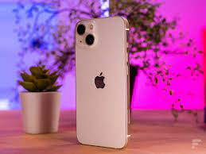

Iphone 13:
iPhone 13 est un smartphone haut de gamme signé Apple et compatible 5G. Décliné en cinq couleurs, il embarque le processeur A15 Bionic, 128 Go de stockage au minimum et un double module caméra avec grand-angle et ultra grand-angle. Son écran OLED mesure 6,1 pouces et est compatible HDR Dolby Vision. |
 |
| < /a> |
Iphone 13 pro:
L'iPhone 13 Pro,, annoncé le 14 septembre 2021, est le modèle haut de gamme de la 15e itération du smartphone d'Apple. Il est équipé d'un écran OLED de 6,1 pouces 120 Hz, d'un SoC Apple A15 Bionic compatible 5G (NR & Sub-6) et d'un triple capteur photo de 12+12+12 égapixels (grand-angle, téléobjectif et ultra grand-angle) avec OIS. |
Iphone 13 pro max:L'iPhone 13 pro max est le modéle haut de gamme et grand format de la 65e itération du smartphone d'Apple ,il embarque une batterie plus grosse selon Apple. Il existe en versions 128 Go, 256 Go, 512 Go et 1 To. |
|